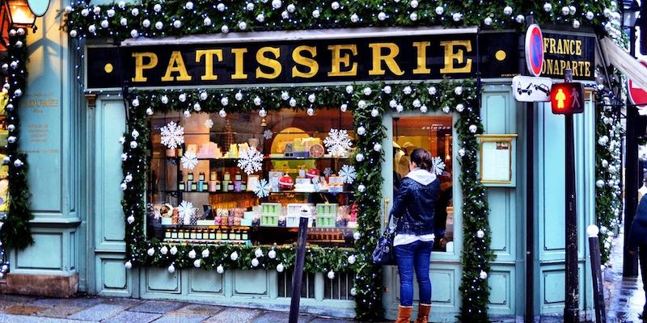
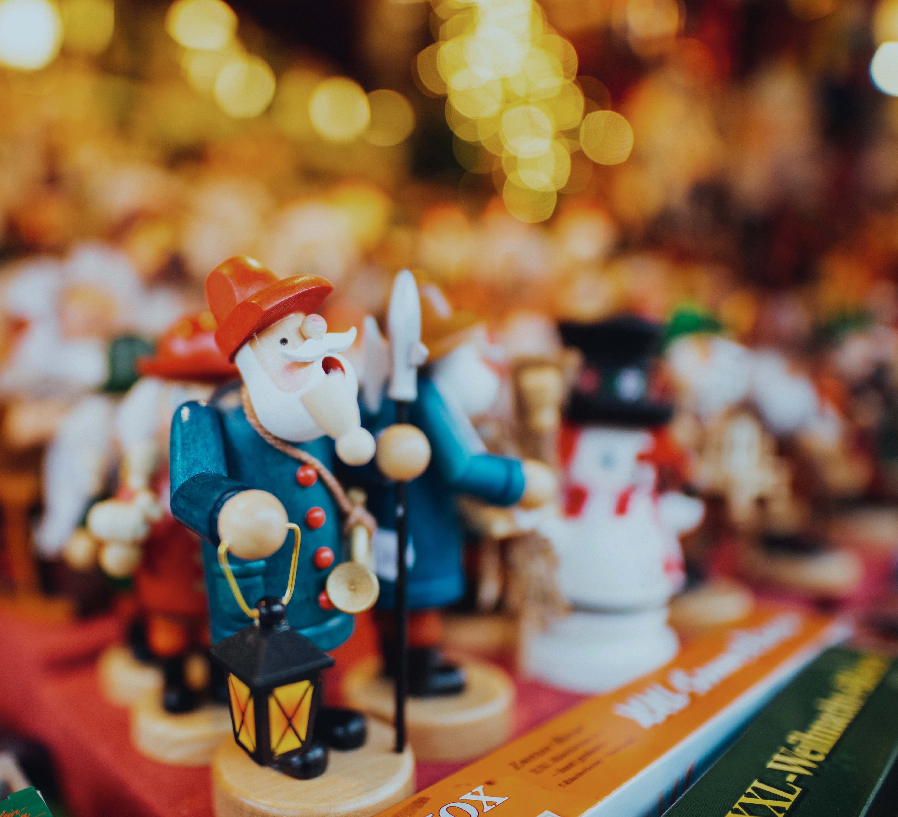
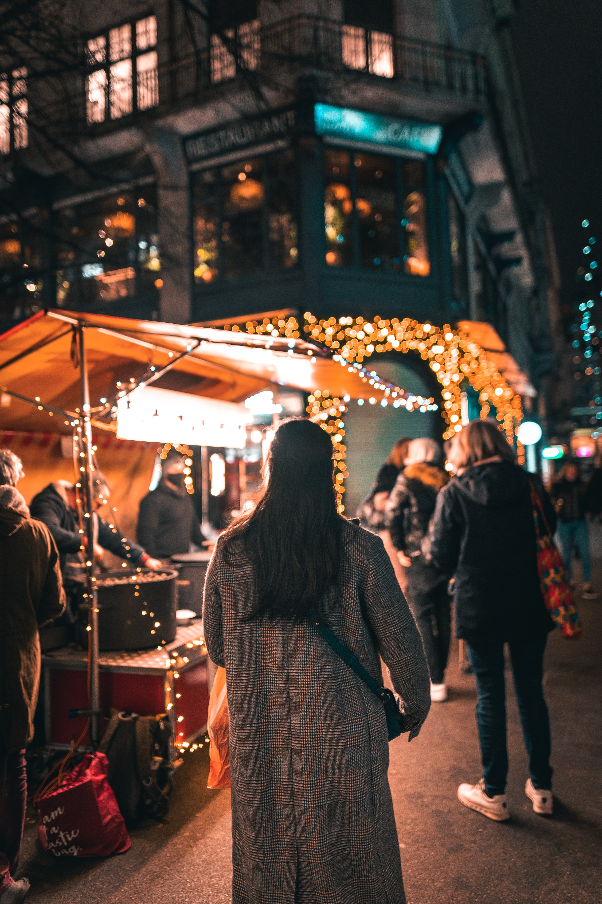
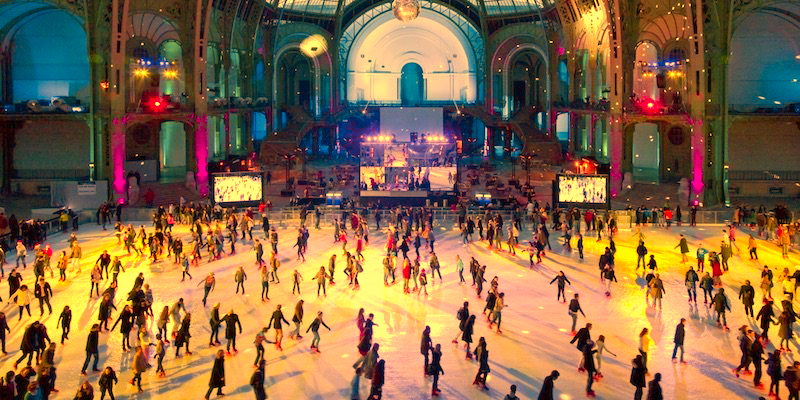

Christmas Eve In Paris
Christmas in Paris is a always magical time, but it's even better this year following months of staying at home and dreaming. Store windows are aglow with colorful Noël displays, patisserie shelves virtually groan with seasonal delights, while restaurants create special holiday menus filled with the bounty of the season — fresh oysters from Brittany, foie gras, truffles, chestnuts and champagne. In 2021 — again and at last — all of Paris will be joyeuse for Christmas.
To make certain you have what you need to plan, we'll keep this information updated with the best things to do, what's open, and the greatest ways to explore and enjoy the city we love. Check back often as new dates and times are announced. And, consult our updated December calendar for the latest Paris news.
  